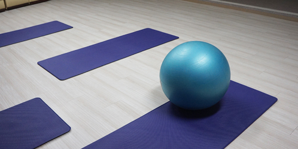
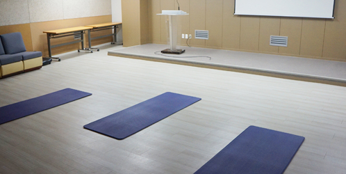

일정
- 
- 
| 날짜 | 월요일, 금요일 오전 11시~12시 |
|---|---|
| 장소 | 은혜산부인과 지하2층 교육관 |
| 인원 | 임신 20주 이상 산모 |
| 교육비 | 4만원 (월 8회) |
| 날짜 | 월요일, 금요일 오전 11시~12시 |
|---|---|
| 장소 | 은혜산부인과 지하2층 교육관 |
| 인원 | 임신 20주 이상 산모 |
| 교육비 | 4만원 (월 8회) |
출산에 필요한 근육들을 강화시키고 이완시켜주는 훈련을 하고 출산에 필요한 호흡법을 반복적으로 연습하기 때문에 출산에 도움이 됩니다.
01.일주일에 세 번, 공복 때
02.서서히 시작하고 억지로 하지 않습니다.
03.몸을 조이는 시계, 반지 등은 착용하지 않습니다.